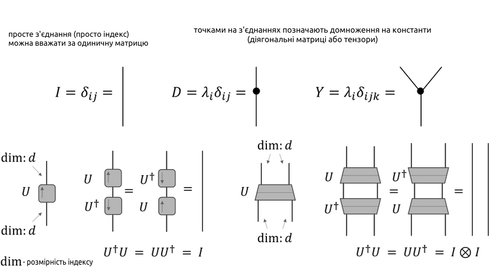

Тензори та Тензорні Мережі
Вступ
Тензорні мережі використовуються в сучасній квантовій фізиці для опису хвильових функцій, але методи прикладної математики для роботи з ними вже знайшли застосування в машинному навчанні. Квантові алгоритми для квантових комп'ютерів теж можна описувати тензорними мережами (власне кажучи, стандартні квантові схеми якоюсь мірою і є діяграми для тензорних мереж). Водночас, українською про тензорні мережі (або тензорні діяграми) майже нічого доступного не написано. Поспішаю це виправити.
Для сприйняття цієї теми читач має розуміти принаймні початкову лінійну алгебру та знати, що таке теорія графів (ідеально також розуміти якісь алгоритми на графах). Зауважу також, що в цій статті для нас "тензорні мережі" та "тензорні діяграми" – синонімічні поняття. Втім, багато (можливо навіть більшість) авторів розрізняє ці поняття, вживаючи другий термін лише для графічних позначень тензорних мереж.
Що Таке Тензор?
Почнемо з простого.
Тензор порядку n – це математичний об'єкт, що складається з чисел (будь-якого виду), кожне з яких має n впорядкованих індексів і зветься елементом тензору. Перекладаючи простою мовою, це числовий масив виміру n.
(Варто зазначити, що це означення підходить нам більше з точки зору комп'ютерних наук та реалізації, фізики ж означають тензори іншим чином)
Прикладами тензорів суть матриці (тензори другого порядку) та вектори (першого порядку). Тензори, в цілому, варто розглядати як узагальнення векторів і матрицю на довільний розмір. Скаляри теж іноді вважаються тензорами нульового порядку.

Згортка Тензорів та Нотація Ейнштейна
Згортка тензорів (з англ. tensor contraction, не плутати з convolution - згортка) – це операція суми всіх елементів двох тензорів за спільним інексом, результатом якої є інший тензор.
Це те що я буду далі називати згорткою. Часто це ще називають binary tensor contraction, аби відрізняти від tensor contraction, яким тоді вважають просто узагальнення сліду матриці (тобто операція над одним тензором, а не над двома), але це призводить до плутанини, як на мене.
Насправді, згортка тензорів в окремих випадках відома всім першокурсникам. Множення вектора на матрицю й навіть множення двох матриць - це теж згортки: \[1) b_j = \sum_i{A_{ij}v_i} \iff b = Av = \sum_i{A_iv_i}\] \[2) C_{jk} = \sum_i{A_{ji}B_{ik}} \iff С = AB = \sum_i{A_iB_i}\] В обох прикладах згортка відбувається за \(i\), ліворуч повний варіант, праворуч - простіший. Додамо тепер і складніший приклад для тензора \(D\) виміру 3 і матриці \(A\) \[3) T^j = \sum_i{\sum_k{{D^j}_{ik}А_{ki}}} = \sum_{i,k}{{D^j}_{ik}А_{ki}}\]
Зверніть увагу, що у виразі \({D^j}_{ik}\) позначка \(j\) - це просто верхній індекс, а не степінь. Таке позначення зустрічається нерідко.
Тензорна згортка це дуже часта операція, тому її запис прийнято скорочувати, але при цьому хотілося б зберігати в записі згадку про індекс, за яким ми згортаємо. Для цього існує запис Ейнштейна або нотація Ейнштейна, запишемо ним наші приклади \[1) b_j = A_{ij}v_i\] \[2) C_{jk} = A_{ji}B_{ik}\] \[3) T^j = {D^j}_{ik}А_{ki}\] Індекси, що зустрічаються по одному разу в кожній частині рівняння (наприклад \(j\)) називаються вільними, а ті, що зустрічаються двічі в одній частині рівняння - зв'язними або зв'язанними. Інших індексів не може існувати. Якщо це не зрозуміло, то далі пояснюється, чому.
Мережеве Представлення та Застосування
Графічно було б зручно (з точки зору згортки) уявляти тензори як певні "вузли/фіґури з ніжками" (мал. 1), де кожен індекс - це певна ніжка. Такі позначення тензорів можна об'єднувати в мережеві діяграми. Ніжки, що стирчать з усієї мережі позначають вільні індекси, ніжки, що сполучають два тензори - зв'язні. Іншого виду ніжок ви намалювати не зможете, отже й інших індексів існувати не може. Тобто:
Тензорна мережева діяграма, просто тензорна діяграма або діяграма Пенроуза (з англ. tensor diagram notation) – це спосіб графічного представлення виразів тензорної згортки та мультилінійних функцій за допомогою відображення один-до-одного на певний граф, де вершини позначають тензори, а ребра - індекси, за якими відбувається згортка.
Тоді наші приклади 1), 2), 3) можна подати графічно в наступному вигляді:
На цьому малюнку ми можемо бачити три різні тензорні мережі (надалі вживатимемо словосполучення "тензорна мережа" у графічному розумінні). Згортка в мережі відбувається об'єднанням (певним злиттям) тензорів, що зв'язані між собою індексами. В результаті згортки отримаємо новий тензор, який матиме вільні індекси за свої. Це вже дуже красиво, однак найкраще ще попереду.
Хоча таке позначення й допомагає орієнтуватися при роботі з багатовимірними тензорами, було б дивно приділяти йому стільки уваги лише через це. Насправді ж, основний сенс тензорних мереж це інше, до чого можна прийти міркуючи про вирази з тензорами в такому вигляді, а саме - обернена до згортки операція - розклад тензорів. Мета розбиття тензора на частини (різними способами) може бути різна, однак більшість прикладних задач тензорних мереж зводиться до апроксимації (наближення) розбиття одного тензору у мережу.
Що це дає? Менше параметрів у системі, а отже економія на операціях та пам'яті. Для прикладу, якщо наша система описується тензором порядку \(n\), то її можна наблизити за допомогою тензорної мережі з декількох тензорів, що буде згортатись до тензору порядку \(n\), але матиме менше параметрів.
Які системи описуються тензорами \(n\)-того порядку? Як правило, складні квантові системи, ми також можемо записати в такому вигляді цілі моделі машинного навчання, інші фізичні системи тощо. Наприклад, таким чином:
Тут \(|ψ⟩\) позначає систему з \(N\) підсистем (для кожної відповідний індекс \(i\)), тензор \(C\) - це по суті великий масив з коєфіцієнтами для лінійної комбінації можливих станів системи.
Спряжені Тензори та Інші Позначення
На малюнку 5 наведено приклади інших позначень: діягональних матриць та їх узагальнень на тензори, унітарних матриць та їх узагальнень на тензори, обернених до них. Останні позначаються трапеціями з лінією, яка позначає вісь, відносно якої тензор є "умовно унітарним", перевенуті відносно цієї вісі трапеції позначають обернені тензори. Важливим трюком, на якому ґрунтується багато тензорно-мережевих алгоритмів є розбиття звичайних зв'язків на пару спряжених унітарних матриць, або навіть тензорів будь-якої форми, які потім можна частково чи повністю згорнути з сусідніми, що дозволяє змінювати форму мережі майже будь-яким чином (Малюнок 6).
Центри, Алгоритми, Теореми...
Звісно, це лише основи теорії тензорних мереж. Як уже було сказано, до неї входять і алгоритми, і теореми й ще багато чого. Розбивати один тензор на мережу можна великою кількістю різних структур, які можуть застосовуватись у тих чи інших умовах. На жаль, наразі це єдиний матеріял про тензорні мережі українською мовою, тому за подальшим раджу звертатись до англомовних джерел.
Розглянемо, для прикладу на останок, один алгоритм. Та спершу визначимо, що таке центр ортогональности.
Центр ортогональности (з англ. Centre of Orthogonality) у древовидних тензорних мережах – це один із тензорів мережі, що, прийнятий за корінь умовного дерева, має ізометрію на всіх гілках. Простіше кажучи, у тензорній мережі, що є деревом з точки зору теорії графів, це тензор (а тобто вершина) цієї мережі такий, що всі гілки від цього тензора можна назвати "унітарними" (див. малюнок 7).
Центр ортогональности є об'єктом з декими часто бажаними властивостями, що робить його пошук потрібною практичною задачею. Власне, на один з алгоритмів його пошуку далі й подивимось.
Алгоритм протягування (протягу) (з англ. Pulling Through) використовується для пошуку центру в древовидних тензорних мережах. Точніше, ми обираємо будь-який зручний за позицією чи розмірами тензор і, за допомогою змін, як на малюнку 6 чи просто розкладів тензорів, перероблюємо його на центр. Для цього алгоритму знадобиться поняття QR-розкладу тензорів чи матриць на множники. Кроки:
- Орієнтуємо "ребра" в сторону обраного центру (А).
- Починаючи з "джерел" гілок розкладаємо тензори QR-розкладом (відносно вісі між відходячими та входячими ребрами).
- Перепозначити тензор за його Q частиною, а R частину згорнути до наступного тензора.
- Повторити для наступних тензорів.
Загальний сенс алгоритму, насправді, не складно осягнути. У QR-розкладі Q-частина для дійсних матриць є ортогональною, для комплексних тензорів - аналогічно. Тому, залишаючи в мережі лише такі Q-частини тензорів, ми робимо А, куди ми просто "злили" все зайве, центром.